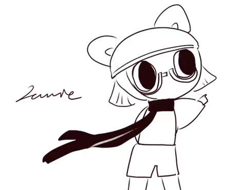

Jingwen Chen (Jamie)

Freelance Illustrator ♌
open to work！ 👉
Contact Me
About Me
Education
University of Texas at Austin
- Graduated 2023 May
- Bachelor of Fine Arts (BFA) in Studio Art
Work Experience
-
Social Media Content Creator Intern
CheersYou International Consulting Inc | July 2023 - October 2023
- Created text and graphical content that aligned with marketing strategy and catered to the
preferences of the target audience.
- Collected and integrated information about studying abroad, including the daily life of
international students and the information of American universities.
- Designed visually appealing covers and infographics.
-
Summer Camp Art Specialist
Lightkeepers International LLC | July 2023 - August 2023
- Prepared lesson plans and class materials for children of different ages and skill levels.
- Introduced children to art creation through fun and engaging methods, helping them develop their
hands-on creative abilities.
- Maintained class discipline, monitored children's behavior, and coped with any unexpected event
promptly.
- Communicated with students, motivated them to participate in class, and adjusted curriculum based on
student performance/feedback.
-
Motion Graphics Designer
SHE Foundation | December 2021 - March 2022
- Produced informative animated short videos on women's mental health for the foundation.
- Conceived storyboards based on scripts, including a Chinese version and an English version.
- Transferred original ideas and images into well-edited videos.
-
Graphic Designer
SanFuChuan (China) Design Company | September 2021 - December 2021
- Provided brand visual design and packaging design solutions based on client’s requirements.
- Produced fine illustrations, packaging die-cut images, and product mock-up images.
Skills
- Adobe Creative Suite
- Canva
- Figma
- Notion
- Blender
💗💗💗